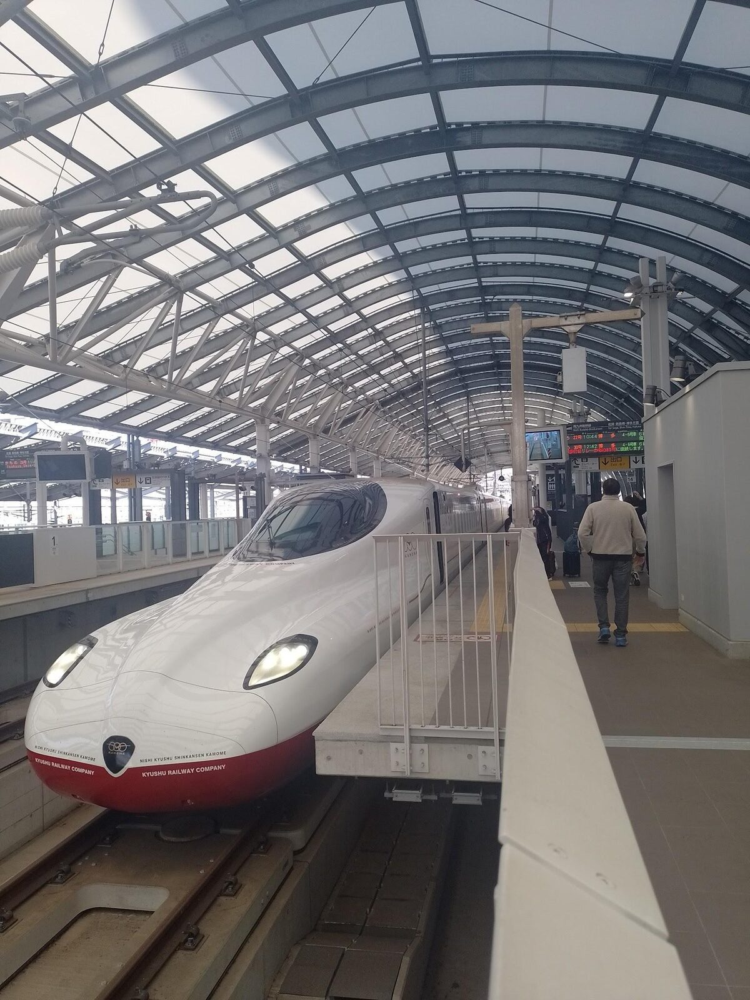
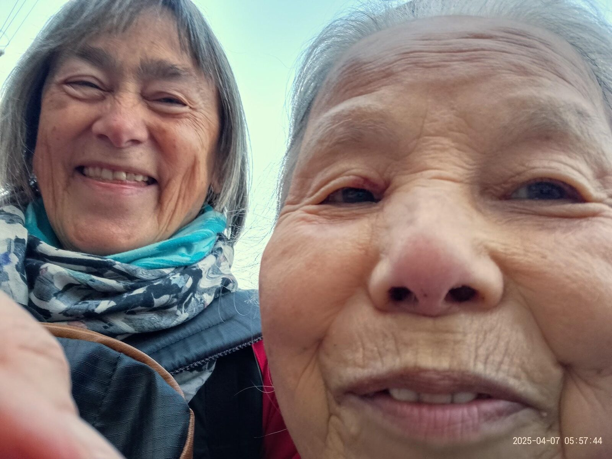
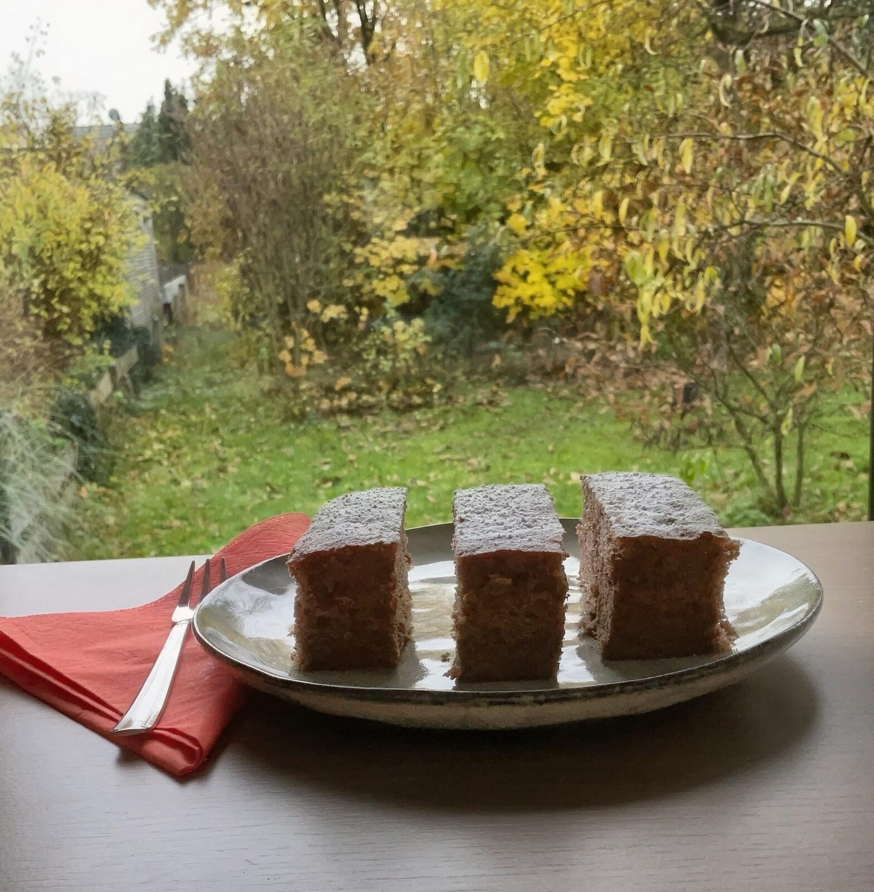

Nach einer etwas unruhigen Nacht geht es mit dem Shinkansen von Nagoya nach Kyoto. Das japanische Abenteuer ohne Yasuko’s umsichtige Begleitung kann beginnen.
Ein besonderes Fahrgefühl macht sich breit in diesem Hochgeschwindigkeitszug und selbst das Einstiegsritual lässt mich staunen: Sehr diszipliniert stehen die Menschen in der Schlange und kommen ohne Gedränge durch eine Schranke in das gebuchte Abteil an ihre Plätze. Ob dieser Zug auch mal überfüllt ist und Passagiere gezwungen sind zu stehen oder auf dem Boden sitzen müssen? Ich habe ihn für 1 Woche gebucht und werde mir diese Frage sicher die nächsten Tage beantworten können.
Jetzt gilt es, mich zurücklehnen und die schnell vorbeiziehende Landschaft auf mich wirken zu lassen. Die Industrieanlagen im Dunstkreis von Nagoya und danach kleine Dörfer mit frischem Grün, u.a. von Bambuswäldern begrenzt, gewähren mir einen ersten Einblick. Schade, ich kann nicht einfach mal aussteigen und mich auf langsame Weise dieser Landschaft nähern.
Ankunft im Ameisenhaufen
Kyoto wartet und da zuerst ein Bahnhof, der einem riesigen Ameisenhaufen ähnelt. Nachdem ich lieber mit Menschen in Kontakt trete, als mit meinem mobilen Gerät, wende ich mich an eine Gruppe junger Leute. Offensichtlich sind sie genauso fremd, wie ich hier und auch mit der Verständigung klappt es nicht allzu gut. Den Weg zu meiner ersten Unterkunft muss ich wohl über das Touristenbüro in Erfahrung bringen. Freundlich bekomme ich dort einen Plan mit detaillierten Hinweisen, wie ich zur angegebenen Adresse komme. Die Bleibe für 4 Tage habe ich noch in Nagoya gebucht und freue mich darauf. Was sich wohl hinter der Bezeichnung “Hara-House” verbergen mag? Meine Freundin meinte, es wäre eine besondere soziale Einrichtung, die mit den eingenommenen Übernachtungsgeldern hilfsbedürftige Menschen unterstützt.
Bevor ich meine Neugier befriedigen kann, geht es zur Bushaltestelle. Es wimmelt auch hier von Menschen und alle stehen geduldig in einer der vielen Schlangen an. Ich reihe mich folglich ein und während des Anstehens habe ich Zeit für ein kurzes Innehalten. Es durchfährt mich siedend heiß: Mein iPad ist weg. Ich habe es im Touristenbüro stehen lassen. Schnell durch das Menschengewirr zurück und ….. es steht dort, wo ich es abgestellt habe.
Beflügelt geht es weiter und ich erreiche noch vor Einbruch der Dunkelheit meine Unterkunft.
Bei Kuniko im Hara-House

Kuniko, die unermüdliche, hilfsbereite und fleißige Seele des Hauses, empfängt mich mit Tee und einem kleinen Snack, zeigt mir mein Zimmer und wir üben uns in japanisch/englischer Konversation. Immerhin habe ich 2 Wochen Japan-Intensiv-Sprachkurs hinter mir und will ein paar Floskeln loswerden. Die Verständigung klappt einigermaßen: ich erfahre den Tagesablauf der 90 jährigen alten Dame und kann nicht genug staunen, mit welcher Hingabe sie organisiert, kocht, die Gäste unterhält und alles mit einem zeitlosen freundlichen Lächeln im Gesicht bewältigt. Die Einladung zu einer besonderen Teezeremonie am nächsten Tag schlage ich trotz meiner eigenen Vorhaben nicht aus.
Zum Abschluss des heutigen wieder aufregenden Tages genehmige ich mir im Lokal nebenan zum Dinner ein herzhaftes japanisches Krautomlett, Okonomiyaki.
Okonomiyaki お好み焼き
Zutaten
- 125 g Weißkraut
- ½ Möhre
- 2 Frühlingszwiebeln
- 2 Eier
- 50 ml Gemüsebrühe
- 100 g Mehl
- Salz nach Geschmack
- Öl zum Braten
- Für Sauce und Belag: 2 EL Tomatenketchup
- 1,5 EL Worcestershire Sauce
- 1 EL Austernsauce
- 1 ½ TL Zucker
- Japanische Mayonnaise (Asia-Laden)
- Bonito-Flocken
Zubereitung
Weißkraut und Möhren in feine Streifen schneiden und in eine große Schüssel geben. Frühlingszwiebel in feine Ringe schneiden und beiseite stellen. Eier separat aufschlagen, Wasser und Mehl dazugeben und mit etwas Salz aufschlagen, sodass keine Mehlklümpchen mehr vorhanden sind. Anschließend alles zur Kohl-Möhren-Mischung geben und gleichmäßig vermengen, sodass das Gemüse gut vom Teig umhüllt ist.
1 EL Öl in einer Pfanne bei mittlerer Hitze erhitzen und ¼ der Gemüse-Teig-Mischung hinein geben, mit dem Pfannenwender flach drücken und in etwa 4 Min. auf der Unterseite braten bis er goldbraun ist und nach dem Wenden auf der anderen Seite weitere 4 Minuten. In der Zwischenzeit die Sauce zubereiten: Ketchup, Worcestershire-, Austernsauce und Zucker verrühren.
Den fertigen Okonomiyaki auf einen angewärmten Teller geben, mit der Sauce bestreichen, nach Bedarf Mayonnaise und die Frühlingszwiebel darüber streuen, möglichst heiß servieren. Guten Appetit!
Und noch ein Dessert
Kyoto, eintauchen in die alte Kaiserstadt, die über 1000 Jahre lang Sitz des japanischen Kaiserhofes war, mit ihren unzähligen Tempeln, Schreinen und Museen will ich morgen. Vorher jedoch nach meinem leckeren Pfannkuchen noch ein Dessert: Nagasaki-Honigkuchen (Castella).
Nagasaki-Honigkuchen (Castella) カステラ
Zutaten
- 120 g Weizenmehl + evtl. 2 EL Kakao
- 1 Backpulver
- 5 Eier
- 80 g Zucker
- 2 EL neutrales Öl
- 1 EL Honig
- Außerdem: 20 g Rohrzucker
Zubereitung
Eine Auflaufform 20 x 20 cm mit Backpapier auslegen. Den Boden gleichmäßig mit Rohrzucker bestreuen.
Eier mit Zucker zu einer dickflüssigen cremigen Masse aufschlagen, Honig und Öl dazugeben und kurz unterrühren. Nach und nach Mehl und Kakao dazusieben und vorsichtig unterheben. Im vorgeheizten Backofen bei 160 Grad Ober- u. Unterhitze ca. 25 Min. backen, den Ofen ausstellen und den Kuchen mit einem Holzlöffel in der Ofentür weitere 10 Minuten im Ofen lassen. Den Kuchen auskühlen lassen, die Ränder vorsichtig abschneiden, halbieren und in 3cm dicke Scheiben schneiden.
Wer mag, kann diese Schnitte noch mit etwas Alkoholischem tränken. Hier mein Vorschlag:
Tamagozake 卵酒
Zutaten
- 180 ml Sake
- 1 sehr frisches Ei
- 2 TL Zucker o. Honig
- ½ TL geriebenen Ingwer
Zubereitung
Sake bis kurz vor dem Kochen erhitzen, etwas abkühlen lassen (70 Grad), Ei mit dem Zucker in einer größeren Tasse gründlich verquirlen, den warmen Sake in einem dünnen Strahl unter ständigem Rühren zum Ei geben bis die Masse cremig und schaumig ist. Nach Geschmack den geriebenen Ingwer zugeben, über die Schnitte geben und gleich verzehren.

Itadakimasu – guten Appetit! いただきます